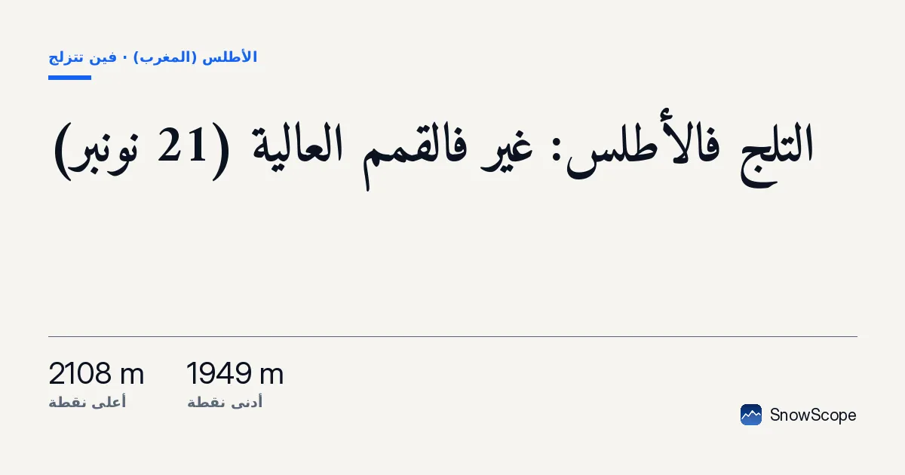

التلج فالأطلس: غير فالقمم العالية (21 نونبر)
البيستات ديال الأطلس كاينة عريانة يوم 21 نونبر. SnowScope كايوري 1 سم غير في أعلى النقاط فقط، موزعة على حوالي 0 كم² ديال التضاريس. في هاد الجبال الجافة، التلج كايجي على شكل موجات؛ أول سقوط حقيقي ممكن يبقى بعيد بأسابيع.
شوف توقعات التلج مباشرة ديال Jbel Hebri فالتطبيق ديال SnowScopeالعلو ديال التلج، التنبيهات والخريطة 3D، فابور.
التلاتة محطات، التلاتة بيستات عريانة
Jbel Hebri ماشي عندها التلج على الجهة الفوقانية. Michlifen، الأقل علو 1,870 م، كاينة جافة بحال بحال. Oukaïmeden، الأعلى ديال التلاتة في 3,258 م، كاتوري ماشي عندها غطا على البيستات اليوم.
الخريطة انخفضت من 19 نونبر، كاين 10 كم² ديال التراب كانت بيضا. اليوم الرقم هاد صار 0 كم². التلج اللي سقط بداية الأسبوع انذاب وارجع للقمم العالية، فوق الجهة اللي ممكن يوصل ليها الرافع.
| المحطة | العلو ديال التلج | تلج جديد، 72 س | جاي، الأيام الجاية | الفوق |
|---|---|---|---|---|
| Jbel Hebri | 0 سم | 0 سم | 0 سم | 2108 م |
| Michlifen | 0 سم | 0 سم | 0 سم | 2070 م |
| Oukaïmeden | 0 سم | 0 سم | 0 سم | 3258 م |

علاش الارتفاع مهم هنا
مستوى التجمد يوم 21 نونبر موجود بين 4,160 م و 4,380 م في Jbel Hebri. واخا يعني أن المطر أو التلج الرطب كايسقط على كل بيست تقدر المحطة توفرها. حتى التلج الجديد كايتحول لشوربة في سواعات بعد ما يسقط.
Oukaïmeden كاينة في الأعلى، مع قمتها في 3,258 م. كاين عاصفة حقيقية تجي، هاد الارتفاع الإضافي كايديها أول فرصة تحتفظ بالتلج الطري. Jbel Hebri (2,108 م) و Michlifen (2,070 م) خاصهم يبقاو يستنيو نظام أبرد بزاف باش تتبيض.
شنو كاتوري التوقعات
بين دابا و 24 نونبر، ماشي تلج جديد متوقع لأي محطة. الخريطة كاتتنبأ أن 0 كم² ديال التلج كايبقاو من خلال النهاية ديال الأسبوع وتاني يوم الاتنين.
هاد نمط الأطلس: فترات جافة طويلة كاتنقطع بعواصف قصيرة وقوية. السقوط الموالي كايقدر يوصل أي وقت، لكن ماشي مرئي بعد. كاين يسقط، راقب الخريطة ديال SnowScope ديال Oukaïmeden أولا؛ الارتفاع كايديها المزية.
شنو الفرق مع الأسبوع اللي فات
بالأرقام ديال الشتوات اللي فاتو، هاد الحال ماشي غريب. في 2,028 م قرب Jbel Hebri، المتوسط ديال العلو ديال التلج في هاد التاريخ على 46 شتوة كانت 0 سم. في 2,929 م قرب محطات الوسط ديال Oukaïmeden، الطبيعي هو 2 سم. دابا، التلج الفعلي أعمق من كان في 23 ديال 46 شتوة—أفضلية رقيقة، لكن ماشي فشل.
الموسم الجاف في بداية السنة حقيقي. هاد المحطات ماشي كاتتبيض كاين بحال موثوق إلا دجنبر، وكتر مرات ماشي كاملة إلا بعد رأس السنة. الصبر جزء ديال اللعبة هنا.
على الأرض: شنو كاتنساه الخريطة
1 سم في أعلى نقطة كايقول جزء ديال القصة. الخريطة كاتشوف بقع بيضا من الفوق؛ السكيات ديالك كايقولوك شنو كاين كافي باش تسكي فيه. التلج ديال بداية الموسم كتر مرات كايقعد على العشب والصخور المكشوفة. الغطا الرقيق اللي كاتشوفه في التطبيق ممكن يخبي والاو تحتو—أو ممكن يكون والاو بحال بحال.
الشغل في الميدان في هاد الجبال كايدرس التواضع: خريطة SnowScope هي أداة، ماشي وعد. كايوري أحسن تخمين ديال شنو موجود هناك. غير البيست نفسها، في اليوم اللي تجي فيه، كاتقدر تقولك شنو السكيات ديالك كايحصلو عليه.
شنو خاصك تدير الآن
إذا كنت كاتخطط زيارة للأطلس، ماتستعجلش. شوف التوقعات ديال 48 ساعة قبل اللي تتحرك؛ في هاد الجهة، عاصفة ممكن تجي فجأة وتبدل كل حاجة في يومين.
حط تنبيه التلج الطري في تطبيق SnowScope ديال Oukaïmeden. كاين نظام يتحرك مع هوا بارد في الارتفاع، المحطة اللي هنا كايوري تلج جديد الأول. التالتين كايجاو، لكن غير إذا العاصفة باردة بزاف بحال باش توصل لقممهم الأقل.
نصايح للي كيتزلجو
- التلج ديال بداية الموسم رقيق وممكن يخبي الصخور والعشب: بقى على البيستات المفتوحة والمعلمة غير تاع كاين الأساس ديالها.
- التوقعات ديال التلاتة لخمس أيام كاتتغير بزاف في الأطلس: شوف الخريطة ديال 24 ساعة قبل اللي تحرك.
- ماشي التلج على الخريطة ماشي معناه المحطة مغلقة—لكن شوف موقع المحطة على الإنترنيت باش تعرف حالة الرافع وتاريخ الفتح قبل اللي تحجز رحلة.
- حط تنبيه التلج الطري ديال Oukaïmeden: كاين عاصفة توجد مع هوا بارد، توصل لهاد الارتفاع الأول بسبب قمتها 3,258 م.
- جيب طبقات: مستوى التجمد دابا موجود فوق كل قمم المحطات التلاتة بشوية، إذا كنت قاح فالمطر أو الثلج الرطب كايكون ثقيل وجاف.
على هاد الأرقام
العلو ديال التلج فالمحطات هو أكثر تلج فالجهة الفوقانية فالتاريخ المكتوب؛ هادو تقديرات لمنطقة، ماشي قياس فنقطة وحدة. التوقعات يمكن تتبدل. ديما شوف النشرة الرسمية ديال الانهيارات قبل ما تخرج من البيست.
كيفاش تستاشهد بهاد المقال
للبحث، التعليم ولا الصحافة: الأرقام والرسومات تقدر تعاود تخدم بيهم بحرية تحت CC BY 4.0 مع هاد الاستشهاد.
SnowScope (2026), التلج فالأطلس: غير فالقمم العالية (21 نونبر), https://snowscope.app/blog/ar/2026/11/atlas-morocco-atlas-snow-check-21-november-2026.html, تشاف ف 2026-11-21
SnowScope (Atlas Labs). (2026, November 21). التلج فالأطلس: غير فالقمم العالية (21 نونبر). SnowScope snow reports. https://snowscope.app/blog/ar/2026/11/atlas-morocco-atlas-snow-check-21-november-2026.html
BibTeX
@misc{snowscope2026atlasmoroccoatlassnowche,
author = {{SnowScope (Atlas Labs)}},
title = {التلج فالأطلس: غير فالقمم العالية (21 نونبر)},
year = {2026},
month = nov,
howpublished = {\url{https://snowscope.app/blog/ar/2026/11/atlas-morocco-atlas-snow-check-21-november-2026.html}},
note = {Published 2026-11-21 13:04 UTC; accessed 2026-11-21}
}· CC BY 4.0 · الطريقة، الداتا والأدوات →
Jbel Hebri: التلج والحرارة حسب العلو، هاد الشتا مقارنة مع اللي فاتت (الأدوات) →
تابع Jbel Hebri
فابور: ميساج ملي يجي التلج، والتوقعات كل صباح.
تقارير أخرى ديال التلج

لا توجد تلج بعد في Oukaïmeden يوم 12 نونبر. قمم الأطلس ما فيها حتى حاجة؛ الموسم الشتوي عادة كايكون فأقصى حاله فشهر مارس بـ 58 سم في الجهة الفوقانية.

Oukaïmeden على بُعد 50 كم من مراكش. التلج ديال ديسمبر رقيق وما يتوقعش عليه: خطط حول العواصف، ما على التقويم. المعطيات من 13 نونبر 2026.

فـ المحطة ديال التزلج ديال Oukaïmeden فـ المغرب، 15 دجنبر عادي يجيب بغاية 16 سم فـ الجهة المتوسطة. SnowScope يعطيك الحظوظ من 46 شتوة ديال المعطيات.